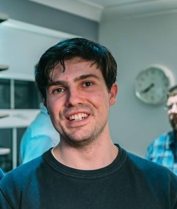

|  |
Ivan James Spence
Student at University Business School: MSc Global Strategy and Innovation Managment
|
Bio
A curious learner that is always seeking to improve themselves and others around them.Currently taking a MSc at the University of Leeds Buisnness School. Previously studied BA Modern History and Politics at the University Essex, with a year abroad to the University of Maastricht. Learning and gaining from my experiences is my driver. I am an avid research and am currently researching and interested in the way companies use the attention economy and network effects in their business model strategy to increasse revenue.Outside of this I enjoy a many activities (Hobbies) and live a healthy lifestyle, spending my spare time with friends and family.
Education

- University of Leeds Business School, Predicted Distinction/Merit Global Strategy and Innovation Managment
- University of Essex, Modern History and Politics (with a year abroad) 2.1
- University of Maastricht, Facaulty of socoical sciences (Year Abroad)
Work History
| Dates |
Work |
| May-July 2018 |
Paralegal Internship at Dowse & Co Solicitors, London. Website |
| 2017-2018 |
Bar Supivisor at Crown and Anchor, Covent Garden Website |
| 2015 |
Assistant Researcher for Dr Lisa Smith, University of Essex |
| Voluntary Work |
| 2018 |
Kiwi Housee, Kings Cross London. Article |
| 2014 |
Letter To an Unkown Solider tent, Womad Festival. |
Skills
| Research ★★★★☆ |
Analytical ★★★★☆ |
| Communication ★★★★☆ |
Team Work ★★★★☆ |
| Computer Skills |
| Html |
★★★☆☆ |
CSS |
★★☆☆☆ |
JavaScript |
★★☆☆☆ |
Hobbies
Contact